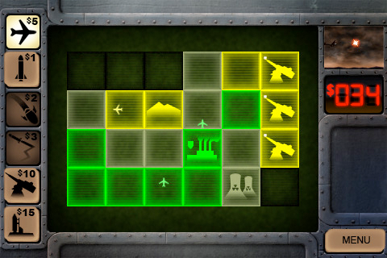
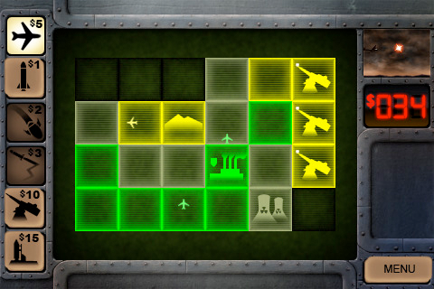

Silo: M.A.D.
DescriptionIt’s time to bring Armageddon down on your enemies in Silo MAD. Look no further if you want a fast-paced Real Time Strategy game requiring skill! Features
Availability
Screenshots |
DescriptionIt’s time to bring Armageddon down on your enemies in Silo MAD. Look no further if you want a fast-paced Real Time Strategy game requiring skill! Features
Availability
Screenshots |